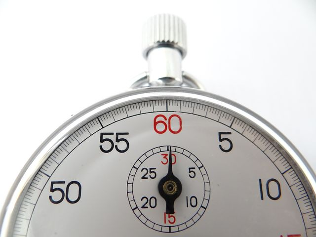

Keeping house
TIMERS
Let's face it, cleaning sucks!
My house is almost never clean. It just isn't. And guess what! It's okay for your hosue to look like people live there, because they do.
But, I have a few tricks to make cleaning a little less daunting.
When I'm feeling overwhelmed by the mess and I just don't know where to start, all I can do is start. Sounds weird, huh? Well, it's never going to get done if you don't start at all. But here's the trick: don't do it all at once! If you start with the the goal to clean EVERYTHING, then either nothing will get done, or you'll lose your $*>t.
First, make sure the kids are occupied. Next, set a timer. It can be 10 or 15 minutes, but make sure it's a small amount of time. Then, see how much you can get done in that much time. When the timer goes off, you're done! Step away from cleaning and take a break.
I do this three to four times during the day. By cleaning in smaller increments, the cleaning seems much more doable.
Pro-tip
When doing a task, such as doing the dishes, set a timer. See how fast you can do it. You'll be surprised how quickly it actually goes by and realize it's really not that bad. 